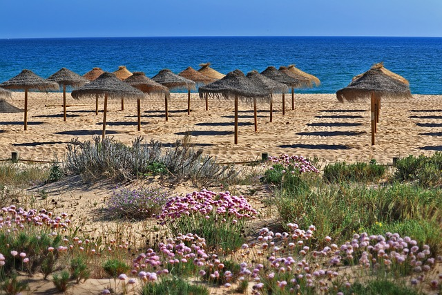
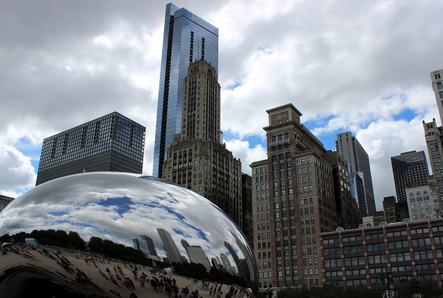
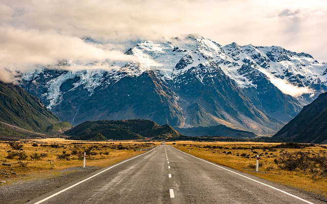
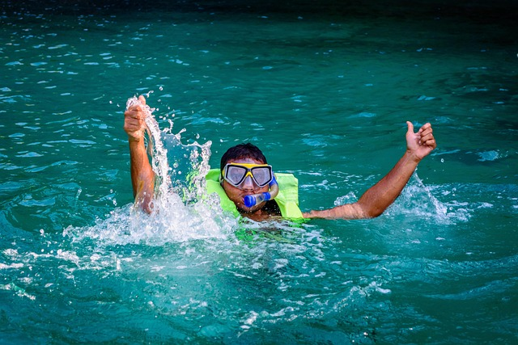
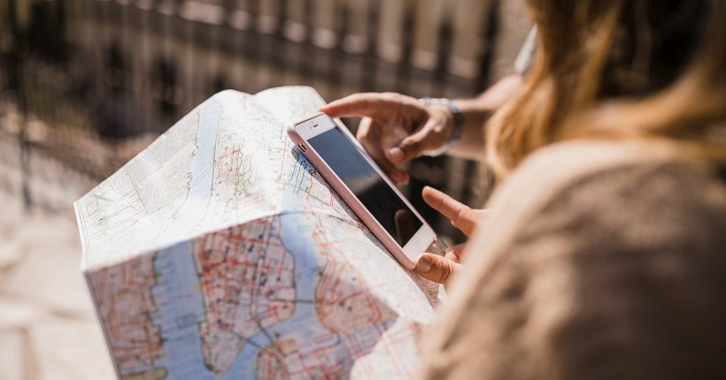

Passo a passo para planejar uma viagem: escolha do destino, roteiro e muito mais!
Planejar uma viagem parece ser tarefa fácil para muita gente acostumada a embarcar por esse mundão, mas se você não está acostumado a roteiros complexos ou é do time de viajantes desorganizados e que deixam tudo para a última hora, esse passo a passo certamente irá te ajudar. Se você ainda não está com uma viagem marcada, aproveite para já sonhar com seu próximo destino.

O que fazer antes de definir o destino para a viagem
Comece a se organizar mesmo antes de definir o destino da viagem. Não é preciso estar com as passagens compradas para montar um roteiro. Ler sobre destinos, conhecer outras cidades e países e passar o tempo pesquisando sobre viagem ajuda a relaxar.
Mesmo que você não saiba o rumo das suas próximas férias, esteja preparado para quando ela acontecer! E quanto mais você conhecer do mundo, melhor! Um roteiro de viagem começa antes da compra da passagem aérea. Aproveite que você não tem “obrigação” com nenhuma rota certa e viaje pelo mundo todo!

Faça uma lista de alguns lugares que você gostaria de conhecer
Sonhar com alguns destinos já ajuda um pouco a ter foco na hora de buscar promoções de passagem aérea e também de colher informações sobre a viagem tão desejada. Ter alguns prediletos em mente nos faz ficar antenados na busca por tudo que envolve a viagem. Agora, se você tiver o mundo todo como sonho a realizar, esse trabalho pode ficar extenso demais.
Se você não sabe por onde começar, confira a lista com os nossos melhores destinos!

Comece a colher informações sobre os seus destinos favoritos
Um dos momentos mais prazerosos na hora de montar um roteiro de viagem. Pesquisar sobre o destino, colher informações, descobrir as principais atrações e tudo o que envolve o seu sonho de viagem é sempre uma deliciosa tarefa. Enquanto você ainda não tem um destino confirmado, vale qualquer leitura, programa de TV, vídeos no YouTube ou conversas com amigos sobre suas opções. Tudo o que desperte ainda mais o seu interesse está valendo! Nesse momento, não é preciso anotar nada e nem se preocupar. É hora apenas de ter um primeiro contato com os destinos de viagem para entender um pouco melhor cada um deles.

Defina o número de dias e período da sua viagem
Saber quando e por quanto tempo você poderá viajar será fator decisivo na hora de definir o destino e montar o roteiro. Uma boa previsão de quantos dias e também da época para o embarque ajudará a definir quais opções da sua lista de desejos são mais adequadas. Se você sonha, por exemplo, em ver neve, não adianta embarcar em meio ao verão no destino. O número de dias disponíveis para a viagem também poderá afetar bastante a escolha. Se você tem muito tempo, poderá optar por destinos mais complexos, que exigem mais dias de viagem ou mesmo dividir as férias em mais de uma cidade.

Pesquise sobre o clima e a melhor época do local escolhido
Com o período da viagem já definido (ou pelo menos o período aproximado), comece a pesquisar sobre o clima, a alta temporada e as datas mais festivas das regiões para onde você pretende viajar. Nem todos os destinos são boas pedidas o ano inteiro e alguns deles podem ser bem mais especiais em algumas datas específicas. É importante conhecer mais sobre o clima para não cair em roubada (como viajar na época das monções para a Ásia ou dos furacões para o Caribe). Ao mesmo tempo, uma boa pesquisa ajuda a acertar em cheio o seu desejo, como ver as cerejeiras no Japão ou a Aurora Boreal nos países nórdicos.
O clima será um fator eliminatório importante na sua lista de destinos, mas a alta temporada e grandes datas festivas também podem influenciar bastante, especialmente quando pensamos na quantidade de turistas ao mesmo tempo que você e os altos custos da viagem. Entender quando é a alta temporada e a melhor época para viajar ajudará na escolha do destinos que case bem com a data disponível.
Tente avaliar o valor a ser gasto durente a viagem
O orçamento de ninguém é ilimitado e muitas vezes precisamos adiar sonhos devido ao alto custo da viagem. Ter ideia de quanto você poderá gastar ajudará a eliminar alguns destinos da sua lista de prioridades. Pesquisar um pouco sobre cada roteiro e avaliar preços de passeios, passagens aéreas, alimentação e hotéis será fundamental para ter ideia do que é possível dentro do orçamento previsto. Não adianta ter 2000 reais disponíveis e querer fazer uma safari de luxo na África do Sul. É preciso casar bem o que você tem para gastar com os custos da viagem.
Confira a documentação e vacinas necessárias para viajar
Passaporte e visto são fatores que limitam a escolha de destinos de muita gente. Tirar o passaporte é bem fácil e não há mistério nisso. O ideal é já garantir o seu, independente de ter uma viagem marcada. Nunca se sabe quando vai aparecer uma superpromoção e o passaporte será necessário. Caso tirar o passaporte não esteja nas suas prioridades, foque nos destinos nacionais ou em países que exigem apenas a identidade brasileira para a entrada.
Se você já tem o passaporte e busca destinos no exterior, fique ligado na necessidade de visto e na validade do seu documento! Há viajantes que vivem com medo de tirar um visto (tanto pela burocracia quanto pelo custo) e outros têm o visto recusado antes da viagem. Quem está nesse grupo não precisa se preocupar. Há uma enorme lista de países que não exigem visto de brasileiros para entrada. Agora, se passaporte e visto não são impedimentos para você, o mundo inteiro está de portas abertas!
Alguns destinos do mundo exigem dos viajantes, além da documentação, algumas vacinas. Verifique se esse é o caso, garanta já a vacina e lembre-se de levar o Certificado Internacional de Vacinação ou Profilaxia (CIVP) no dia da viagem.
Como planejar a viagem após a escolha do destino
Com o destino definido você poderá dar passos mais concretos na organização da viagem. Não deixe tudo para a última hora. Dia a dia, de pouquinho em pouquinho, viva a sua viagem antes mesmo de embarcar. A partir de agora você poderá se aprofundar e pesquisar o que fazer, os melhores pontos turísticos, a escolha do hotel, como se locomover, quanto custará a viagem e tudo mais que envolve a organização do seu roteiro e embarque rumo às merecidas férias!

Busque muitas dicas sobre o que fazer no seu destino
Com a cidade ou país escolhido é hora de se aprofundar em todas as informações que puder sobre ele. Conhecer bem as atrações do local ajudará em todos os passos seguintes na organização da sua viagem. Procure dicas em guias de destinos, blogs de viagem, vídeos e, claro, converse com todos os amigos que já estiveram por lá. Quanto mais informações você tiver, melhor!
Procure sobre os principais pontos turísticos, dicas de passeios, os melhores lugares para compras e as atrações imperdíveis do seu destino de férias. Sabendo o que te espera será fácil montar um roteiro.
Siga algumas hashtags e perfis sociais sobre o seu destino
Pode parecer bobagem, mas é possível descobrir muitas atrações acompanhando as hashtags e perfis dedicados exclusivamente a um destino. E o melhor é que esses perfis e hashtags costumam mostrar também cantinhos pouco conhecidos ou quase inexplorados. É a sua chance de descobrir algumas atrações que não estão nos roteiros oficiais e fugir do óbvio ao viajar. Transforme o seu Instagram em um verdadeiro guia de viagens e todo dia se inspire com uma nova descoberta.
Defina o meio de transporte durante a viagem
Saber como se locomover em uma cidade influenciará em diversos tópicos da organização do roteiro. É necessário identificar que tipo de transporte a cidade ou região oferece; se há transporte público eficiente e que leve às principais atrações; ou se é necessário alugar carro ou mesmo usar aplicativos de transporte, como o Uber ou outro específico da região. A escolha do tipo de transporte é muito pessoal, mas fatores como acessibilidade a atrações, disponibilidade e custo de estacionamento; trânsito intenso; e custo final devem ser levados em consideração na hora da decisão.
Escolha o seu hotel ou outro meio de hospedagem
Após pesquisar sobre o que fazer no destino e quais os meios de transporte disponíveis, será mais tranquilo escolher a localização da hospedagem e começar a pesquisa. Na hora de reservar o hotel, vale ficar atento a questões como a facilidade de locomoção, o que permite escolher um hotel mais barato e mais afastado; a concentração de atrações em uma mesma região, o que torna mais prática a escolha de um hotel nas proximidades; a oferta de hotéis que são atrações, como os que oferecem diversas atividades e farão parte do dia a dia da viagem; o grau de conforto que você espera; e, sempre, a melhor relação custo-benefício entre preço e qualidade.
O ideal, no momento da reserva, é ter bastante tempo disponível para a busca do hotel. Você poderá “favoritar” vários deles em sites de busca como o Booking, acompanhar as avaliações, identificar se há variação de preços e só então fazer a reserva. E se estiver com dúvida ou quiser tentar um preço melhor, faça uma reserva cancelável. Assim você poderá mudar de ideia a qualquer momento.
Monte um roteiro base para todos os dias da viagem
Com todas as anotações do que fazer, o meio de transporte que será usado e o mapa das atrações será fácil montar um roteiro base para você seguir durante a viagem. Não é preciso se prender integralmente o roteiro, mas ter uma ideia do que é possível fazer em um mesmo dia ajuda bastante a organizar a viagem e também a não perder tempo demais em deslocamento ou buscando o passeio do dia.
O primeiro quesito que deve ser levado em consideração ao montar um roteiro dia a dia é a proximidade das atrações. Evitar deslocamentos longos e priorizar os pontos turísticos e passeio que estão na mesma região ajuda a economizar tempo e permite fazer muito mais coisas em um mesmo dia. Use o mapa (dica anterior) para ter ideia do que está por perto para começar a montar o roteiro de viagem.
Defina o tamanho e tipo da bagagem
Sim! Definir o tamanho e o tipo da bagagem que será levada na viagem pode fazer grande diferença. É preciso levar em consideração alguns fatores importantes que podem tornar a sua viagem mais cara e até mais difícil. As novas regras de tamanho de bagagem adotadas pelas companhias áreas tem aumentando bastante o custo para despachar malas demais, então, caso queira economizar, é melhor se organizar com o mínimo.
Escolha o vestuário da viagem e outros itens pessoais que serão necessários
Na hora de escolher a bagagem ideal é preciso também levar em consideração quais itens serão necessários durante a viagem. E, dependendo do destino, pode ser necessário fazer algumas compras antes de embarcar ou logo que chegar ao local das férias.
O tipo de clima é um dos fatores que leva muita gente a gastar dinheiro antes mesmo da viagem. Embarcar para destinos de neve ou muito frio, por exemplo, exige vestuário específico e é um investimento obrigatório, devendo ser levado em consideração no orçamento. A boa notícia é que roupas de inverno costumam durar muito e você não precisará comprar sempre que viajar. Se preferir, leve apenas o básico e deixe para comprar tudo ao chegar.
Outros destinos também podem exigir compras especiais. É o caso de viagens que envolvem trekking, passeios pela natureza, mergulho ou outros esportes que exigem equipamentos específicos. Pode ser necessário, por exemplo, comprar uma boa bota de trilha, meias especiais, máscara e nadadeiras para mergulho, sapatilhas aquáticas, casaco corta-vento, capa de chuva, mochilas impermeáveis e outros itens a se pensar de acordo com cada destino.
Estude o mínimo da língua do seu destino ou garanta um inglês básico
Para quem embarca rumo ao exterior um fator importante a ser levado em consideração é a língua do país. Quem fala inglês não precisa se preocupar em grande parte do mundo, mas até para quem domina o inglês pode ser um desafio viajar para destinos como China, Japão, Rússia e outros países onde a população não costuma falar inglês. Se você está embarcando rumo a outro país, decore o mínimo necessário para se comunicar e garanta no celular alguns aplicativo de tradução que certamente serão úteis durante a viagem.
Descubra como ter acesso a internet
Ta aí um ponto que é fundamental hoje em dia para qualquer viajante. Estar conectado garante todas informações necessárias com rapidez e facilidade, ajuda a ter aplicativos de celular bem úteis para a viagem e também é uma mão na roda na hora de resolver problemas que surgem de última hora (desde uma reserva de hotel que deu errado a cartões de banco furtados que podem ser cancelados online).
Viajar sem acesso à internet é impensável para muita gente, sendo assim, se garanta! Consulte o hotel sobre a acessibilidade ao wi-fi, adquira um chip virtual (assim você já terá internet quando chegar ao destino), verifique se há pontos de venda de chip de celular no aeroporto, ou assine um serviço que garanta pacote de dados no exterior.
Tenha cópias dos seus documentos e deixe tudo disponível online
Não é raro perder documentos ou ser furtado durante uma viagem. Ter cópias do passaporte, carteira de motorista, identidade, seguro viagem, passagens, ingressos e reservas de hotéis é um cuidado extra que evita maiores dores de cabeça em caso de um incidente inesperado. Procure ter cópias dos seus documentos tanto em papel quanto online. Assim você terá acesso aos números e informações necessárias em caso de extravio.